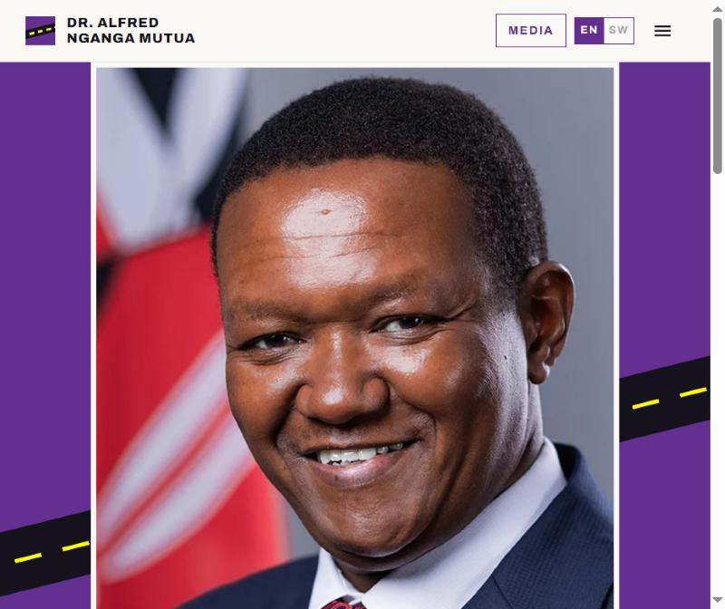
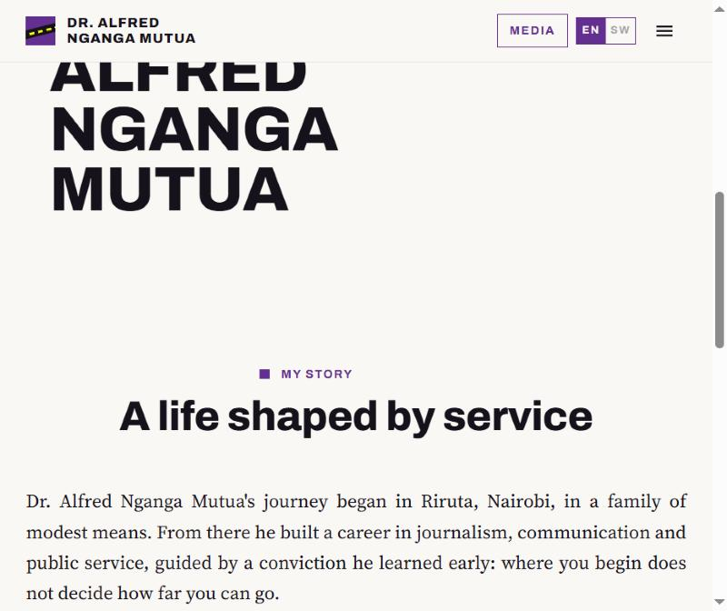
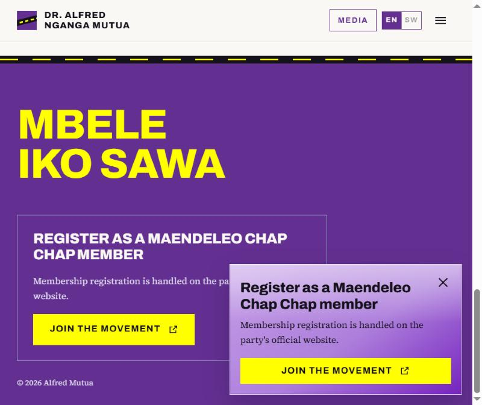

Project 01
Dr. Alfred Nganga Mutua
- What I built
- Designed and developed a bilingual personal website for Dr. Alfred Nganga Mutua, presenting his story, legacy and media in English and Swahili, with a distinctive visual identity and a responsive layout.
Tech stack
Visit alfredmutua.site